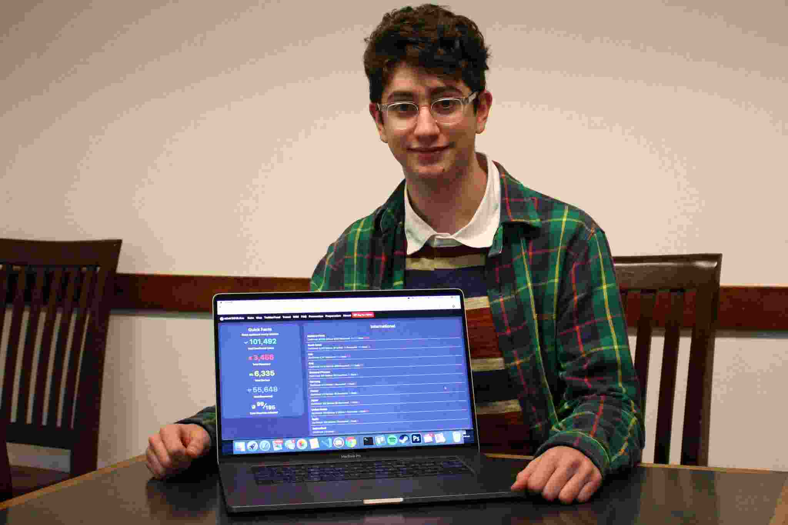

Ahmadi Muslim Youth Convention - A spiritual & Physical Uplifment For All
 Every Ahmadi Muslim must prove to the doubters and sceptics that God does exist and that He is a Living God and that Islam is the final religion revealed by Him" - Hazrat Mirza Masroor Ahmad (A.T.B.A) message to Ahmadi youths. The program which is themed "OBEDIENCE TO KHILAFAT" is meant to remind the youths the importance of adhering to the rule of khilafat. A key aspect of Ahmadi Muslim Youths responsibilities is to ensure effective and efficient youth's moral and spiritual development in this depraved society. A number of professionals, religious leaders, clergymen, government functionaries, youth leaders and several dignitaries will grace the convention. Among programmes lined up for the 3-days programme include Welfare Visitation of Prison Inmates, Free Health Care Delivery, Symposium, Voluntary Blood Donation, Educational Competitions, Sporting activities and so much more. The Majlis Khuddam-ul-Ahmmadiya, Nigeria (MKAN) 47th Annual National Youth Convention (IJTEMA) which was scheduled to be held at Offa, Kwara State, Nigeria has now been postponed indefinitely due to the outbreak of COVID-19 which has indeed proved to be a pandemic. Follow our updates on twitter and facebook and visit: mkan ijtema for more information.
Every Ahmadi Muslim must prove to the doubters and sceptics that God does exist and that He is a Living God and that Islam is the final religion revealed by Him" - Hazrat Mirza Masroor Ahmad (A.T.B.A) message to Ahmadi youths. The program which is themed "OBEDIENCE TO KHILAFAT" is meant to remind the youths the importance of adhering to the rule of khilafat. A key aspect of Ahmadi Muslim Youths responsibilities is to ensure effective and efficient youth's moral and spiritual development in this depraved society. A number of professionals, religious leaders, clergymen, government functionaries, youth leaders and several dignitaries will grace the convention. Among programmes lined up for the 3-days programme include Welfare Visitation of Prison Inmates, Free Health Care Delivery, Symposium, Voluntary Blood Donation, Educational Competitions, Sporting activities and so much more. The Majlis Khuddam-ul-Ahmmadiya, Nigeria (MKAN) 47th Annual National Youth Convention (IJTEMA) which was scheduled to be held at Offa, Kwara State, Nigeria has now been postponed indefinitely due to the outbreak of COVID-19 which has indeed proved to be a pandemic. Follow our updates on twitter and facebook and visit: mkan ijtema for more information.
Who is Avi Schiffman? The Brains Behind COVID-19 Tracking Website Used Globally
 As the world has been in total panic due to the pandemic which has claimed lives in multitude globally, a 17-Year Old from Washington State, U.S.A has developed a tracking website for COVID-19. This kid turned down an offer of $8 Million to run ads on his website because he did not design it for the money, how sweet is that?. He launched this home made website to track the movement of coronavirus using a coding tactic known as "web-scraping", Avi's site collates data from different sources around the globe ranging from W.H.O, the C.D.D, Yonhap News Agency - South Korea and others to display the recent numbers of COVID-19 cases around the world. Click here to keep up with recent corona virus updates throughout the world.
INSPIRATIONAL QUOTE OF THE DAY
"Sometimes we make the process more complicated than we need to. We will never make a journey of a thousand miles by fretting about how long it will take or how hard it will be. We make a journey by taking each day step by step and then repeating it again and again until we reach our destination".
- Joseph B. Wirthlin
MOTIVATIONAL QUOTE OF THE DAY
"Nothing in the world can take the place of PERSISTENCE. TALENT will not; nothing is more common than unsuccesful men with talent. GENIUS will not; unrewarded genius is almost a proverb. EDUCATION will not; the world is full of educated derelicts. PERSISTENCE and DETERMINATION alone are omnipotent. The slogan 'Press On' has solved and always will solve the problems of the human race".
- Calvin Coolidge